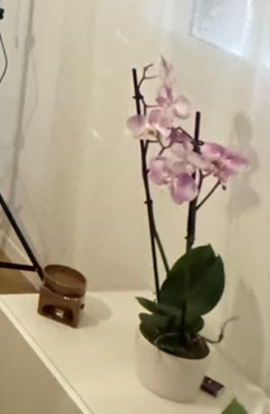
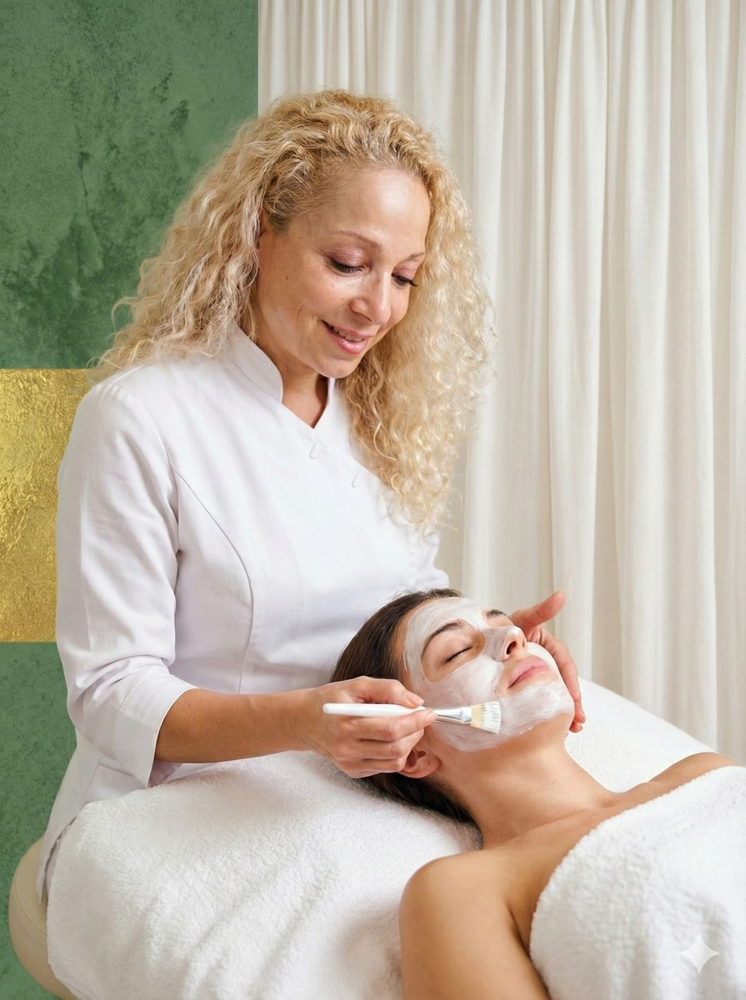
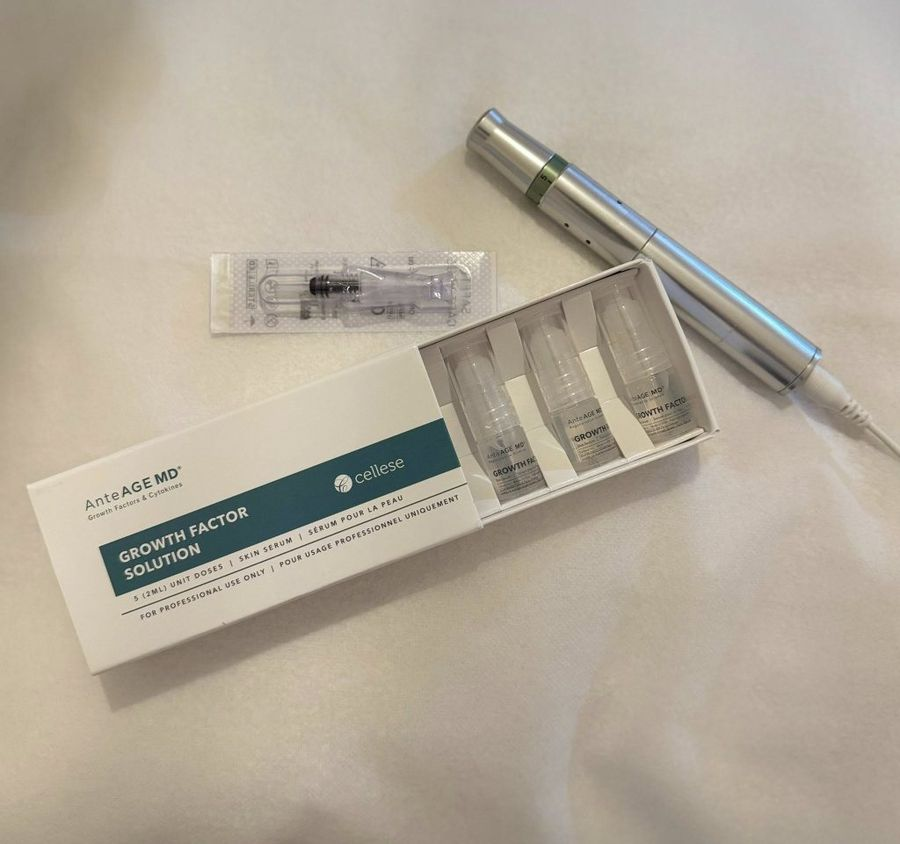
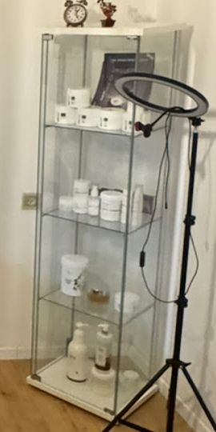
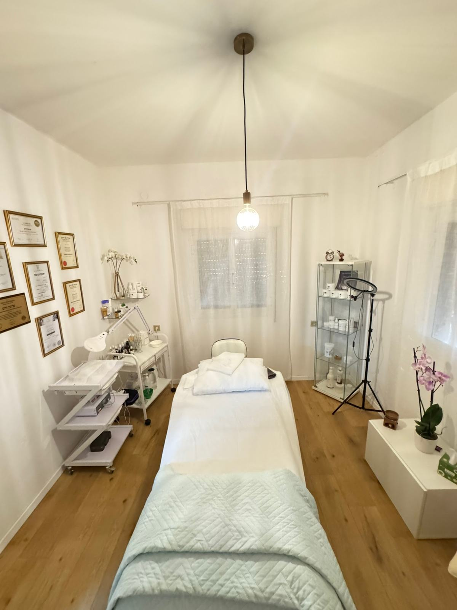

טיפולי פניםFacials
מותאמים למצב העור ולמטרות הטיפול.Matched to the skin’s condition and to what you want from it.
קונספט לדוגמה שנבנה עבור שרונה - קליניקה לקוסמטיקה מתקדמת ורפואה משלימה בחיפה · זה אינו האתר הרשמי של העסקA sample concept built for Sharona – Advanced Cosmetics & Complementary Medicine Clinic, Haifa · This is not the business’s official website
קוסמטיקה מתקדמת, טיפולי פנים ורפואה משלימה, ברחוב הגליל בנווה שאנן.Advanced cosmetics, facials and complementary medicine, on HaGalil Street in Neve Sha’anan, Haifa.





קוסמטיקאית קלינית ומטפלת מוסמכת בדיקור סיני וקוסמטי, פרחי באך וצמחי מרפא.Clinical cosmetician and certified practitioner of Chinese and cosmetic acupuncture, Bach flowers and medicinal herbs.
״אני מאמינה שטיפול אמיתי חייב לראות את האדם כמכלול – גוף ונפש כאחד.״“I believe real care has to see the whole person – body and mind together.”
שרונה, מתוך אתר הקליניקהSharona, from the clinic’s website (translated from Hebrew)
קוסמטיקה מתקדמת, לצד דיקור ורפואה סינית.Advanced cosmetics, side by side with acupuncture and Chinese medicine.
מותאמים למצב העור ולמטרות הטיפול.Matched to the skin’s condition and to what you want from it.
לסימני גיל, פיגמנטציה, מרקם לא אחיד וצלקות פוסט־אקנה.For signs of ageing, pigmentation, uneven texture and post-acne scars.
מחטים דקות בנקודות על הפנים.Fine needles placed on points across the face.
כחלק מגישה משלימה ואישית.As part of a personal, complementary approach.
מהן נרקח בקבוק אישי.From which a personal bottle is blended.
טיפול ועיסוי בשמנים אתריים.Treatment and massage with essential oils.
כאן מתקיימים הטיפולים, בתיאום מראש.This is where treatments happen, by appointment.
דירוג 5.0 מתוך 34 ביקורות.Rated 5.0 from 34 reviews.
שרונה פשוט מדהימה, אני עושה אצלה טיפולי פנים שהם פשוט מושלמים, המוצרים, הזמן שהיא נותנת לכל שלב וממש משקיעה ועושה את הדברים בצורה הטובה ביותר. ממליצה מאוד מאוד!Sharona is simply amazing. I have facials with her that are just perfect: the products, the time she gives every stage, she really puts in the effort and does things the best way. Highly, highly recommended!
באמצע יום של לו״ז צפוף קבעתי עיסוי ארומתרפי. וזה התברר כמשהו הכי טוב שיכולתי לעשות למען עצמי… בשילוב קליניקה כל כך נעימה, נקייה ומדוייקת. נתמלאתי שלווה ורוגע.In the middle of a packed day I booked an aromatherapy massage, and it turned out to be the best thing I could have done for myself… in such a pleasant, clean and precise clinic. I was filled with calm.
שרונה מקצועית מאוד. התאימה לי את הטיפול בדיוק לצרכים שלי. תמיד יוצאת מרוצה ממנה. אווירה מדהימה. יחס חם ואישי. ממליצה מאוד.Sharona is very professional. She matched the treatment exactly to my needs. I always leave happy. Wonderful atmosphere, warm and personal. Highly recommended.
קיבלתי שרות מצויין, אווירה נעימה, מרגיעה. הטיפול עצמו היה מדהים. בנוסף לטיפול פנים קיבלתי גם עיסוי כפות רגליים, ידיים וכתפיים. יצאתי מאוד מרוצה ועור הפנים שלי זהר.Excellent service, a pleasant, calming atmosphere. The treatment itself was amazing. Along with the facial I also got a foot, hand and shoulder massage. I left very happy and my skin was glowing.
טיפול שמימי, בחיים לא עברתי כזה טיפול מדהים. ממליצה בחום. שרונה תודה רבה, ממתינה כבר לטיפול הבא.A heavenly treatment, I’ve never had one this amazing. Warmly recommended. Thank you so much Sharona, already waiting for the next one.
ציטוטים מתוך ביקורות גוגל.Quoted from Google reviews, translated from Hebrew.
שיטה משלימה שפיתח ד״ר אדוארד באך בשנות ה־30: 38 תמציות, שכל אחת נקשרת למצב רגשי או לדפוס התמודדות.A complementary method developed by Dr Edward Bach in the 1930s: 38 essences, each linked to an emotional state or a way of coping.
מתחילים בשיחה ובהקשבה. מתוכה נבחרות לרוב עד שש או שבע תמציות, שמשולבות בבקבוק אישי.It starts with a conversation and listening. From it, usually up to six or seven essences are chosen and blended into a personal bottle.
לא. התמציות הן טיפול משלים, ואינן תחליף לאבחון או לטיפול רפואי, פסיכולוגי או פסיכיאטרי.No. The essences are a complementary treatment, not a substitute for medical, psychological or psychiatric diagnosis or care.
בהערכת עור מקצועית, עם התייחסות לאורח החיים, להרגלי התזונה ולצרכים האישיים. מתוכה נבנית תוכנית טיפול וטיפוח אישית.With a professional skin assessment that looks at lifestyle, eating habits and personal needs. A personal treatment and care plan is built from it.
כל הטיפולים בתיאום מראש: בטלפון 054-910-8008, בוואטסאפ או במייל.All treatments are by appointment: by phone on 054-910-8008, on WhatsApp or by email.